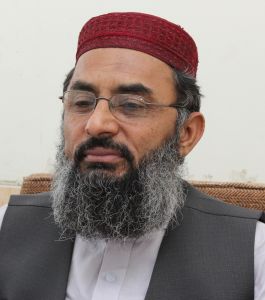

Engr. Syed Shaukat Hussain Bukhari laid foundation of the AGHOSH-E-GULZAR-E- MADINA (AGM),
{kind=link}
a non-profitable organization, to provide every possible service and assistance to poor orphans, thedestitute anddeprived classes of society .The main purpose of establishing this organization is to promote feelings of sympathy among people, create an environment conducive to foster mutual love, brotherhood and fraternity and strive for a real Islamic Welfare Society, taking all the sections of society along. To achieve this purpose AGM has embarked on projects in the fields of education, health and public welfare. It is through these fields of welfare work that the sacred task of serving humanity is being accomplished.
After the final decision of taking first step for this mission, I went to search for the location with my peon Mohammad Rafi along with an innocent baby girl named “Bakhtawar” who was with him. After exploring all possible locations of that area, on my way back home I asked my driver about that little innocent girl? He said;“Sir she is an orphan and I have adopted her.” It was really a very surprising co-incidence that an orphan baby girl was with me the whole day during my first journey of this mission. It was undoubtedly a great blessing and an omenof involvement of the grace of Allah Almighty.
{kind=link}